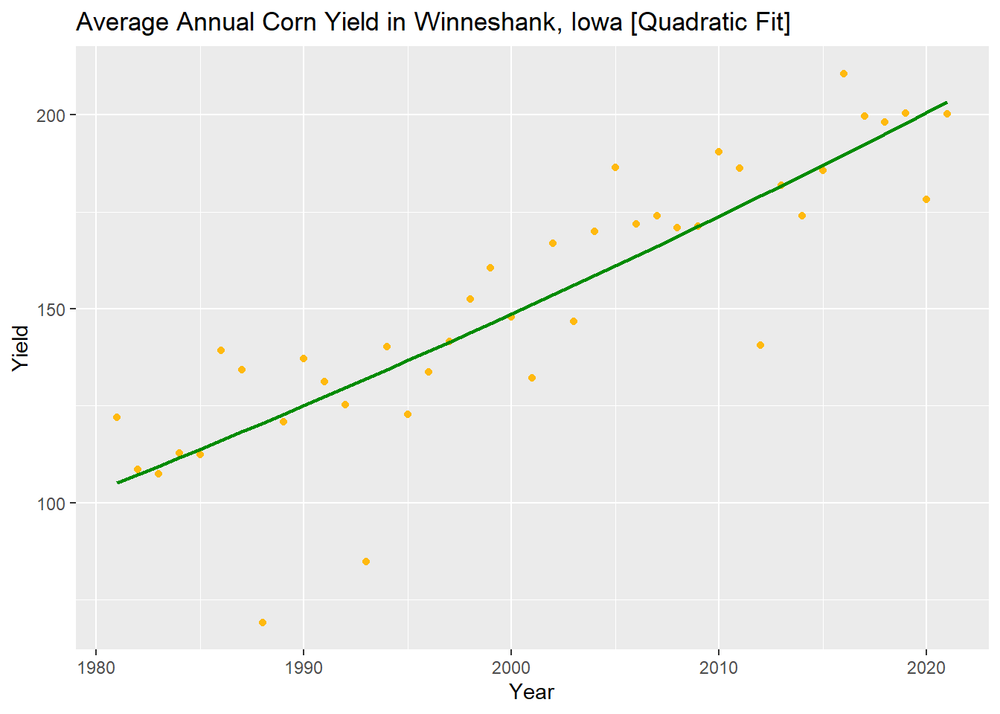

Chapter 6 Weather and Corn Yield Regressions
6.0.1 Load the PRISM daily maximum temperatures
# daily max temperature
# dimensions: counties x days x years
prism <- readMat("05-data/prismiowa.mat")
# look at county #1
t_1981_c1 <- prism$tmaxdaily.iowa[1,,1]
t_1981_c1[366]## [1] NaNplot(1:366, t_1981_c1, type = "l")
ggplot() +
geom_line(mapping = aes(x=1:366, y = t_1981_c1)) +
theme_bw() +
xlab("day of year") +
ylab("daily maximum temperature (°C)") +
ggtitle("Daily Maximum Temperature, Iowa County #1")## Warning: Removed 1 row(s) containing missing values (geom_path).
# assign dimension names to tmax matrix
dimnames(prism$tmaxdaily.iowa) <- list(prism$COUNTYFP, 1:366, prism$years)
# converted 3d matrix into a data frame
tmaxdf <- as.data.frame.table(prism$tmaxdaily.iowa)
# relabel the columns
colnames(tmaxdf) <- c("countyfp","doy","year","tmax")
tmaxdf <- tibble(tmaxdf)6.1 Temperature trends
6.1.1 Summer temperature trends: Winneshiek County
tmaxdf$doy <- as.numeric(tmaxdf$doy)
tmaxdf$year <- as.numeric(as.character(tmaxdf$year))
winnesummer <- tmaxdf %>%
filter(countyfp==191 & doy >= 152 & doy <= 243) %>%
group_by(year) %>%
summarize(meantmax = mean(tmax))
ggplot(winnesummer, mapping = aes(x = year, y = meantmax)) +
geom_point() +
theme_bw() +
labs(x = "year", y = "Tmax (°C)") +
geom_smooth(method = lm)## `geom_smooth()` using formula 'y ~ x'
lm_summertmax <- lm(meantmax ~ year, winnesummer)
summary(lm_summertmax)##
## Call:
## lm(formula = meantmax ~ year, data = winnesummer)
##
## Residuals:
## Min 1Q Median 3Q Max
## -2.5189 -0.7867 -0.0341 0.6859 3.7415
##
## Coefficients:
## Estimate Std. Error t value Pr(>|t|)
## (Intercept) 41.57670 36.44848 1.141 0.262
## year -0.00747 0.01823 -0.410 0.684
##
## Residual standard error: 1.232 on 36 degrees of freedom
## Multiple R-squared: 0.004644, Adjusted R-squared: -0.02301
## F-statistic: 0.168 on 1 and 36 DF, p-value: 0.68446.1.2 Winter Temperatures - Winneshiek County
winnewinter <- tmaxdf %>%
filter(countyfp==191 & (doy <= 59 | doy >= 335) & !is.na(tmax)) %>%
group_by(year) %>%
summarize(meantmax = mean(tmax))
ggplot(winnewinter, mapping = aes(x = year, y = meantmax)) +
geom_point() +
theme_bw() +
labs(x = "year", y = "Tmax (°C)") +
geom_smooth(method = lm)
lm_wintertmax <- lm(meantmax ~ year, winnewinter)
summary(lm_wintertmax)##
## Call:
## lm(formula = meantmax ~ year, data = winnewinter)
##
## Residuals:
## Min 1Q Median 3Q Max
## -3.5978 -1.4917 -0.3053 1.3778 4.5709
##
## Coefficients:
## Estimate Std. Error t value Pr(>|t|)
## (Intercept) -29.87825 60.48100 -0.494 0.624
## year 0.01368 0.03025 0.452 0.654
##
## Residual standard error: 2.045 on 36 degrees of freedom
## Multiple R-squared: 0.005652, Adjusted R-squared: -0.02197
## F-statistic: 0.2046 on 1 and 36 DF, p-value: 0.65376.1.3 Multiple regression – Quadratic time trend
winnewinter$yearsq <- winnewinter$year^2
lm_wintertmaxquad <- lm(meantmax ~ year + yearsq, winnewinter)
summary(lm_wintertmaxquad)##
## Call:
## lm(formula = meantmax ~ year + yearsq, data = winnewinter)
##
## Residuals:
## Min 1Q Median 3Q Max
## -3.3539 -1.2985 -0.2813 1.4055 4.2620
##
## Coefficients:
## Estimate Std. Error t value Pr(>|t|)
## (Intercept) -1.086e+04 1.238e+04 -0.877 0.386
## year 1.085e+01 1.239e+01 0.876 0.387
## yearsq -2.710e-03 3.097e-03 -0.875 0.388
##
## Residual standard error: 2.051 on 35 degrees of freedom
## Multiple R-squared: 0.02694, Adjusted R-squared: -0.02867
## F-statistic: 0.4845 on 2 and 35 DF, p-value: 0.6201winnewinter$fitted <- lm_wintertmaxquad$fitted.values
ggplot(winnewinter) +
geom_point(mapping = aes(x = year, y = meantmax)) +
geom_line(mapping = aes(x = year, y = fitted)) +
theme_bw() +
labs(x = "year", y = "tmax")
6.1.4 Download NASS corn yield data
# set our API key with NASS from source api file
source("C:/Users/devin/Desktop/CSU/S22/ESS 580A7/Bookdown/api-key.R")
nassqs_auth(key = nass_api_key)
# parameters to query on
params <- list(commodity_desc = "CORN", util_practice_desc = "GRAIN", prodn_practice_desc = "ALL PRODUCTION PRACTICES", year__GE = 1981, state_alpha = "IA")
# download
cornyieldsall <- nassqs_yields(params)##
|
| | 0%
|
|= | 1%
|
|== | 2%
|
|=== | 3%
|
|==== | 4%
|
|===== | 5%
|
|====== | 6%
|
|======= | 7%
|
|======== | 8%
|
|========= | 9%
|
|========== | 10%
|
|=========== | 11%
|
|============ | 12%
|
|============= | 13%
|
|============== | 14%
|
|=============== | 15%
|
|================ | 16%
|
|================= | 17%
|
|================== | 18%
|
|=================== | 19%
|
|==================== | 20%
|
|===================== | 21%
|
|====================== | 22%
|
|======================= | 23%
|
|======================== | 24%
|
|========================= | 25%
|
|========================== | 26%
|
|=========================== | 27%
|
|============================ | 28%
|
|============================= | 29%
|
|============================== | 30%
|
|=============================== | 31%
|
|================================ | 32%
|
|================================= | 33%
|
|================================== | 34%
|
|=================================== | 35%
|
|==================================== | 36%
|
|===================================== | 37%
|
|====================================== | 38%
|
|======================================= | 39%
|
|======================================== | 40%
|
|========================================= | 41%
|
|========================================== | 42%
|
|=========================================== | 43%
|
|============================================ | 44%
|
|============================================= | 45%
|
|============================================== | 46%
|
|=============================================== | 47%
|
|================================================ | 48%
|
|================================================= | 49%
|
|================================================== | 50%
|
|=================================================== | 51%
|
|==================================================== | 52%
|
|===================================================== | 53%
|
|====================================================== | 54%
|
|======================================================= | 55%
|
|======================================================== | 56%
|
|========================================================= | 57%
|
|========================================================== | 58%
|
|=========================================================== | 59%
|
|============================================================ | 60%
|
|============================================================= | 61%
|
|============================================================== | 62%
|
|=============================================================== | 63%
|
|================================================================ | 64%
|
|================================================================= | 65%
|
|================================================================== | 66%
|
|=================================================================== | 67%
|
|==================================================================== | 68%
|
|===================================================================== | 69%
|
|====================================================================== | 70%
|
|======================================================================= | 71%
|
|======================================================================== | 72%
|
|========================================================================= | 73%
|
|========================================================================== | 74%
|
|=========================================================================== | 75%
|
|============================================================================ | 76%
|
|============================================================================= | 77%
|
|============================================================================== | 78%
|
|=============================================================================== | 79%
|
|================================================================================ | 80%
|
|================================================================================= | 81%
|
|================================================================================== | 82%
|
|=================================================================================== | 83%
|
|==================================================================================== | 84%
|
|===================================================================================== | 85%
|
|====================================================================================== | 86%
|
|======================================================================================= | 87%
|
|======================================================================================== | 88%
|
|========================================================================================= | 89%
|
|========================================================================================== | 90%
|
|=========================================================================================== | 91%
|
|============================================================================================ | 92%
|
|============================================================================================= | 93%
|
|============================================================================================== | 94%
|
|=============================================================================================== | 95%
|
|================================================================================================ | 96%
|
|================================================================================================= | 97%
|
|================================================================================================== | 98%
|
|=================================================================================================== | 99%
|
|====================================================================================================| 100%cornyieldsall$county_ansi <- as.numeric(cornyieldsall$county_ansi)
cornyieldsall$yield <- as.numeric(cornyieldsall$Value)
# clean and filter this dataset
cornyields <- select(cornyieldsall, county_ansi, county_name, yield, year) %>%
filter(!is.na(county_ansi) & !is.na(yield))
cornyields <- tibble(cornyields)6.2 Assignment
6.2.1 Question 1a: Extract Winneshiek County corn yields, fit a linear time trend, make a plot. Is there a significant time trend?
winne_yield <- cornyields %>%
filter(county_ansi == 191)
winne_lm <- lm(yield ~ year, winne_yield)
summary(winne_lm)##
## Call:
## lm(formula = yield ~ year, data = winne_yield)
##
## Residuals:
## Min 1Q Median 3Q Max
## -51.163 -1.841 2.363 9.437 24.376
##
## Coefficients:
## Estimate Std. Error t value Pr(>|t|)
## (Intercept) -4763.290 448.286 -10.63 4.46e-13 ***
## year 2.457 0.224 10.96 1.77e-13 ***
## ---
## Signif. codes: 0 '***' 0.001 '**' 0.01 '*' 0.05 '.' 0.1 ' ' 1
##
## Residual standard error: 16.97 on 39 degrees of freedom
## Multiple R-squared: 0.7551, Adjusted R-squared: 0.7488
## F-statistic: 120.2 on 1 and 39 DF, p-value: 1.767e-13ggplot(winne_yield, aes(year, yield)) +
geom_point(color = "darkgoldenrod1") +
geom_smooth(method = lm, color = "green4") +
labs(title = "Average Annual Corn Yield in Winneshank, Iowa [Linear Fit]", x = "Year", y = "Yield")6.2.2 Question 1b: Fit a quadratic time trend (i.e., year + year^2) and make a plot. Is there evidence for slowing yield growth?
winne_yield$yearsq <- winne_yield$year^2
winne_quad <- lm(yield ~ year + yearsq, winne_yield)
summary(winne_quad)##
## Call:
## lm(formula = yield ~ year + yearsq, data = winne_yield)
##
## Residuals:
## Min 1Q Median 3Q Max
## -51.384 -3.115 1.388 9.743 25.324
##
## Coefficients:
## Estimate Std. Error t value Pr(>|t|)
## (Intercept) 2.583e+04 8.580e+04 0.301 0.765
## year -2.812e+01 8.576e+01 -0.328 0.745
## yearsq 7.641e-03 2.143e-02 0.357 0.723
##
## Residual standard error: 17.17 on 38 degrees of freedom
## Multiple R-squared: 0.7559, Adjusted R-squared: 0.7431
## F-statistic: 58.84 on 2 and 38 DF, p-value: 2.311e-12winne_yield$quadraticfit <- winne_quad$fitted.values
ggplot(winne_yield, aes(year, yield)) +
geom_point(color = "darkgoldenrod1") +
geom_line(aes(year, quadraticfit), color = "green4", size = 0.8) +
labs(title = "Average Annual Corn Yield in Winneshank, Iowa [Quadratic Fit]", x = "Year", y = "Yield")
6.2.3 Question 2 – Time Series: Let’s analyze the relationship between temperature and yields for the Winneshiek County time series. Use data on yield and summer avg Tmax. Is adding year or Tmax^2 to your model helpful? Make a plot and interpret the results.
winne_yield_temp <- inner_join(winne_yield, winnesummer, by = "year") %>%
select(!quadraticfit)
winne_YT_lm <- lm(yield ~ meantmax, winne_yield_temp)
summary(winne_YT_lm)##
## Call:
## lm(formula = yield ~ meantmax, data = winne_yield_temp)
##
## Residuals:
## Min 1Q Median 3Q Max
## -71.96 -19.85 -3.19 24.64 61.72
##
## Coefficients:
## Estimate Std. Error t value Pr(>|t|)
## (Intercept) 275.876 118.335 2.331 0.0255 *
## meantmax -4.763 4.438 -1.073 0.2902
## ---
## Signif. codes: 0 '***' 0.001 '**' 0.01 '*' 0.05 '.' 0.1 ' ' 1
##
## Residual standard error: 32.88 on 36 degrees of freedom
## Multiple R-squared: 0.03101, Adjusted R-squared: 0.004098
## F-statistic: 1.152 on 1 and 36 DF, p-value: 0.2902# Linear model is less effective at showing the proper trend between yield and mean max temperature
# Creating a quadratic model for yield.
winne_yield_temp$yieldsq <- winne_yield_temp$yield^2
winne_yield_temp$meantsq <- winne_yield_temp$meantmax^2
winne_YT_quad <- lm(yield ~ meantmax + meantsq, winne_yield_temp)
summary(winne_YT_lm)##
## Call:
## lm(formula = yield ~ meantmax, data = winne_yield_temp)
##
## Residuals:
## Min 1Q Median 3Q Max
## -71.96 -19.85 -3.19 24.64 61.72
##
## Coefficients:
## Estimate Std. Error t value Pr(>|t|)
## (Intercept) 275.876 118.335 2.331 0.0255 *
## meantmax -4.763 4.438 -1.073 0.2902
## ---
## Signif. codes: 0 '***' 0.001 '**' 0.01 '*' 0.05 '.' 0.1 ' ' 1
##
## Residual standard error: 32.88 on 36 degrees of freedom
## Multiple R-squared: 0.03101, Adjusted R-squared: 0.004098
## F-statistic: 1.152 on 1 and 36 DF, p-value: 0.2902winne_yield_temp$tmaxfit <- winne_YT_quad$fitted.values
ggplot(winne_yield_temp, aes(meantmax, yield)) +
geom_point(color = "darkgoldenrod1") +
geom_line(aes(meantmax, tmaxfit), color = "green4") +
labs(title = "Comparison of Corn Yield to Mean Annual Max Temperature, \nWinneshank, Iowa [Quadratic Fit]", x = "Mean Annual Max Temperature (C)", y = "Yield")6.2.4 Question 3 – Cross-Section: Analyze the relationship between temperature and yield across all counties in 2018. Is there a relationship? Interpret the results.
# Filter for 2018 data, convert county to factor
yield_2018 <- cornyields %>%
filter(year == 2018) %>%
mutate(county_ansi = as.factor(county_ansi))
# Group by county, calculate mean for temp, and filter
temp_2018 <- tmaxdf %>%
filter(year == 2018 & !is.na(tmax)) %>%
group_by(countyfp) %>%
summarize(meantmax = mean(tmax))
# Convert county to factor for the inner join
temp_2018 <- temp_2018 %>%
mutate(county_ansi = as.factor(countyfp))
# Join datasets, remove duplicate countyfp column
YT_2018 <- inner_join(yield_2018, temp_2018, by = "county_ansi") %>%
select(!countyfp)
YT_2018$meantsq <- YT_2018$meantmax^2
YT_quad <- lm(yield ~ meantmax + meantsq, YT_2018)
summary(YT_2018)## county_ansi county_name yield year meantmax meantsq
## 1 : 1 Length:93 Min. :149.5 Min. :2018 Min. :11.41 Min. :130.3
## 3 : 1 Class :character 1st Qu.:180.2 1st Qu.:2018 1st Qu.:12.88 1st Qu.:165.8
## 5 : 1 Mode :character Median :193.3 Median :2018 Median :13.87 Median :192.3
## 9 : 1 Mean :193.3 Mean :2018 Mean :13.90 Mean :194.9
## 11 : 1 3rd Qu.:211.3 3rd Qu.:2018 3rd Qu.:15.06 3rd Qu.:226.9
## 13 : 1 Max. :226.0 Max. :2018 Max. :16.25 Max. :264.1
## (Other):87YT_2018$tmaxfit <- YT_quad$fitted.values
ggplot(YT_2018, aes(meantmax, yield)) +
geom_point(color = "darkgoldenrod1") +
geom_line(aes(meantmax, tmaxfit), color = "green4") +
labs(title = "Comparison of Corn Yield to Mean Annual Max Temperature, \nAll Iowa Counties [Quadratic Fit]", x = "Mean Annual Max Temperature (C)", y = "Yield")From our plot, we can see that average temperatures (~13.75C) produce the highest yield across all counties in Iowa. As average max temperatures reach extremes, yields are reduced.
6.2.5 Question 4 – Panel: One way to leverage multiple time series is to group all data into what is called a “panel” regression. Convert the county ID code (“countyfp” or “county_ansi”) into factor using as.factor, then include this variable in a regression using all counties’ yield and summer temperature data. How does the significance of your temperature coefficients (Tmax, Tmax^2) change? Make a plot comparing actual and fitted yields and interpret the results of your model.
# Collect all summer data
summer_tmax <- tmaxdf %>%
filter(doy >= 152 & doy <= 243) %>%
group_by(countyfp) %>%
summarize(meantmax = mean(tmax))
corn_Y <- cornyieldsall %>%
group_by(county_name) %>%
select(county_ansi, county_name, yield, year) %>%
filter(!is.na(county_ansi) & !is.na(yield))
summer_tmax$county_ansi <- as.factor(summer_tmax$countyfp)
corn_Y$county_ansi <- as.factor(corn_Y$county_ansi)
summer_tmax$tmaxsq <- summer_tmax$meantmax^2
# Use yield_2018, join with summer_tmax^2
iowa_YT <- inner_join(corn_Y, summer_tmax, by = "county_ansi")
# Add "+" to linear model for all yields, add the as.factor column = county_ansi
panel_YT <- lm(yield ~ county_ansi + meantmax + tmaxsq + year, iowa_YT)
iowa_YT$panelfit <- panel_YT$fitted.values - 100
# I struggled to find a good regression and functioning linear model based upon the model posted in code help.
ggplot(iowa_YT, aes(yield, panelfit)) +
geom_point(color = "darkgoldenrod1") +
geom_line(aes(yield, panelfit), color = "green4") +
geom_smooth(method = "lm", formula = y ~ x) +
labs(title = "Comparison of Corn Yield to Mean Annual Max Temperature, \nAll Iowa Counties [Panel Regression]", x = "Mean Summer Max Temperature (C)", y = "Yield")6.2.6 Question 5 – Soybeans: Download NASS data on soybean yields and explore either a time series relationship for a given county, the cross-sectional relationship for a given year, or a panel across all counties and years.
# Finding the soybean parameter
# nassqs_param_values("commodity_desc")
# parameters to query on [Jefferson county, 2000 to present]
param_soy <- list(commodity_desc = "SOYBEANS", prodn_practice_desc = "ALL PRODUCTION PRACTICES", year__GE = 2000, state_alpha = "IA", county_ansi = "101")
# Download dataset
soyyieldsjeff <- nassqs_yields(param_soy)##
|
| | 0%
|
|============================= | 29%
|
|======================================================================= | 71%
|
|====================================================================================================| 100%soyyieldsjeff$Value <- as.numeric(soyyieldsjeff$Value)
soyyieldsjeff$yield <- soyyieldsjeff$Value
# Filter the dataset
cornyields <- select(cornyieldsall, county_ansi, county_name, yield, year) %>%
filter(!is.na(county_ansi) & !is.na(yield))
cornyields <- tibble(cornyields)
ggplot(soyyieldsjeff, aes(year, yield)) +
geom_point(color = "darkgoldenrod1") +
geom_smooth(method = lm, color = "green4", fill = NA) +
labs(title = "Average Annual Soybean Yield in Jefferson, Iowa [Linear Fit]", x = "Year", y = "Yield")We can see a trend of increasing yield with each year. This makes since as a trend since populations and demand steadily increases over time. Additionally, the yield may be greater from improved farming technology.